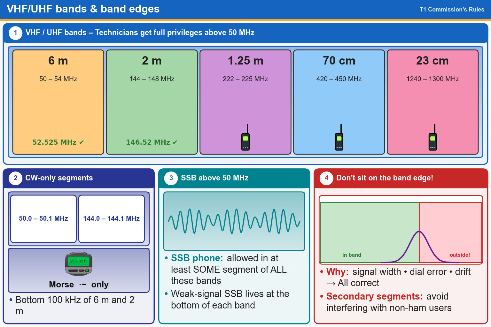

💡 6 m = 50–54 MHz, 2 m = 144–148 MHz. The bottom 100 kHz of each is CW only.
Press Check on any question to see if you're right (it won't show the answer), or Grade at the bottom to grade the whole page.
T1B03[97.301(a)]
Which frequency is in the 6-meter amateur band?
✘A.28.50 MHz
✘B.49.00 MHz
✘C.222.15 MHz
✔D.52.525 MHz
T1B04[97.301(a)]
Which amateur band includes 146.52 MHz?
✘A.6 meters
✘B.20 meters
✘C.70 centimeters
✔D.2 meters
T1B07[97.305(a), (c)]
Which of the following VHF/UHF band segments are limited to CW only?
✔A.50.0 MHz to 50.1 MHz and 144.0 MHz to 144.1 MHz
✘B.902.0 MHz to 902.1 MHz
✘C.219 MHz to 220 MHz and 420.0 MHz to 420.1 MHz
✘D.All these choices are correct
T1B10[97.305(c)]
Where may SSB phone be used in amateur bands above 50 MHz?
✔A.In at least some segment of all these bands
✘B.Only on repeaters
✘C.On any band if the power is limited to 25 watts
✘D.Only in sub-bands allocated to General class or higher licensees
T1B09[97.101(a), 97.301(a-e)]
Why should you not set your transmit frequency to be exactly at the edge of an amateur band or sub-band?
✘A.So that modulation sidebands do not extend beyond the band edge
✘B.To allow for transmitter frequency drift
✘C.To allow for calibration error in the transmitter frequency display
✔D.All these choices are correct
T1B08[97.303]
How are US amateurs restricted in segments of bands where the Amateur Radio Service is secondary?
✔A.U.S. amateurs may find non-amateur stations in those segments, and must avoid interfering with them
✘B.International communications are not permitted in those segments
✘C.U.S. amateurs must give foreign amateur stations priority in those segments
✘D.Digital transmissions are not permitted in those segments